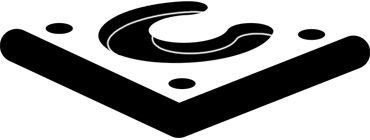

Chassis 2.0
Chassis is Web development starter kit, initially created by Rozario Chivers in 2005. It includes everything you will need for a new project, from templates, debugging tools through to process documents. All in order to work quickly and effectively.
In order to leverage a solid foundation Chassis is built on top of the HTML5 Boilerplate and Baseplate.